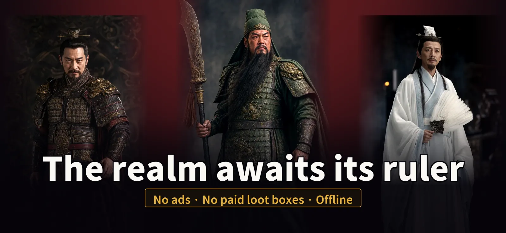
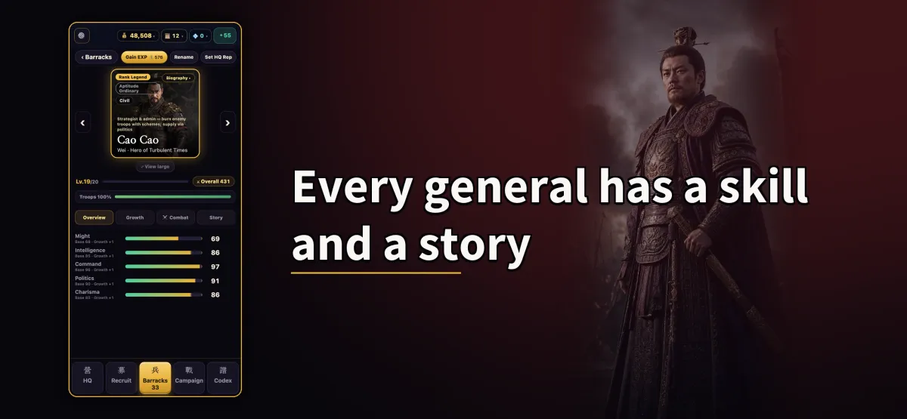
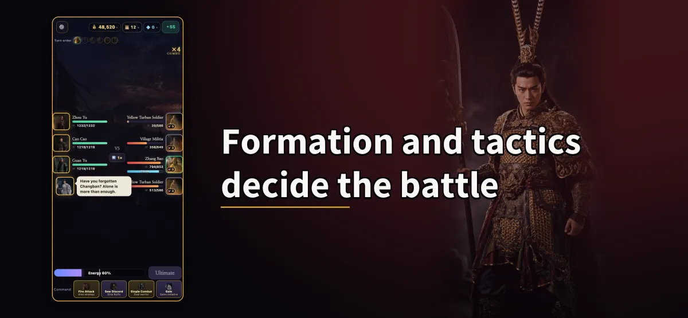
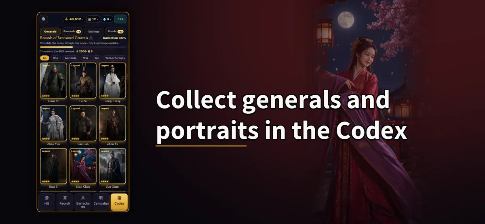
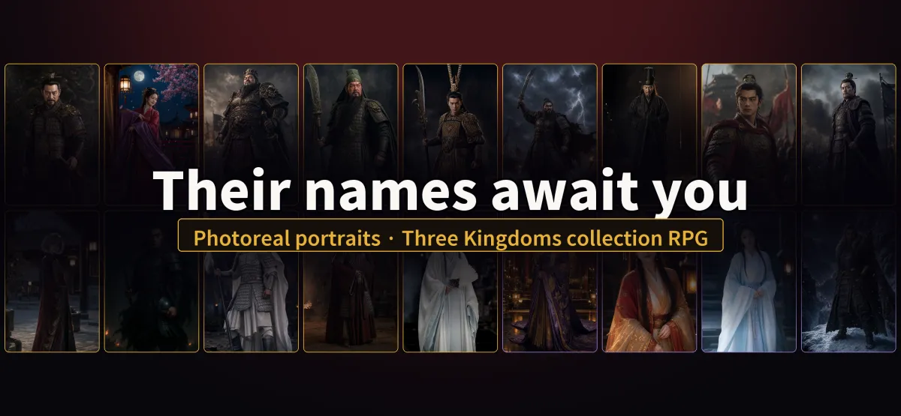
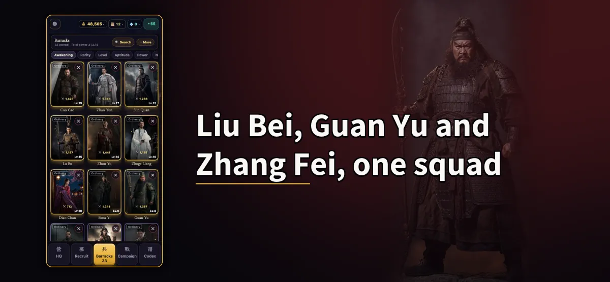
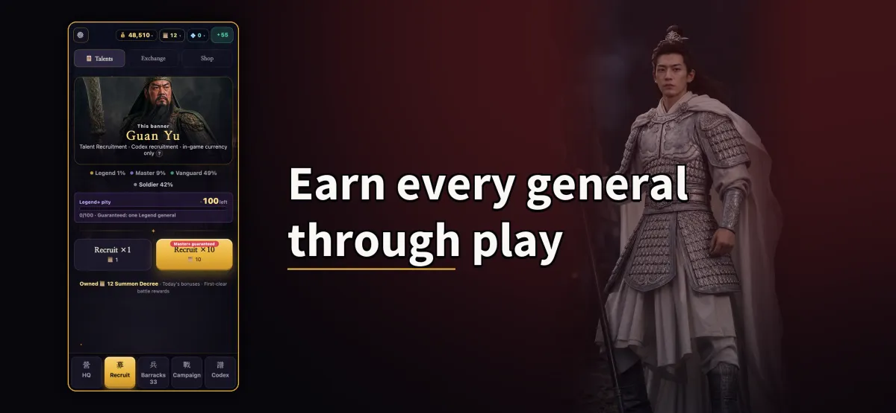
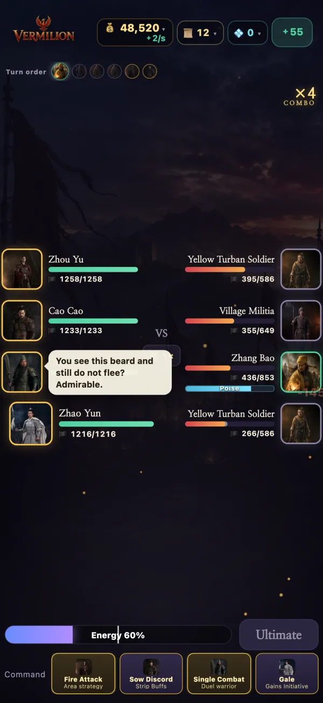
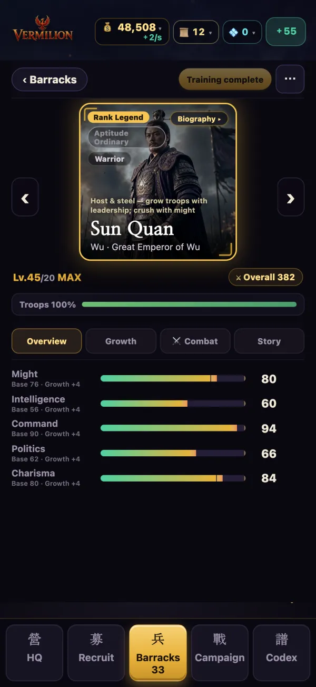
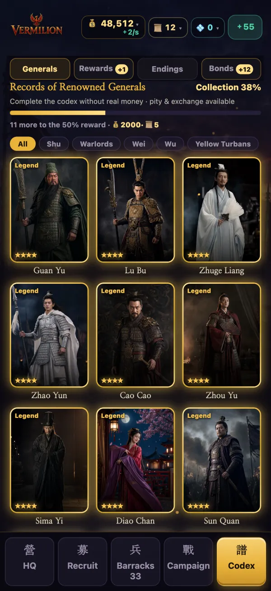

VERMILION: Three Kingdoms
Gather 100+ legendary generals in realistic portraits and fight for the realm with formations and tactics.
Download on the App StoreiPhone & iPad only · Free download
- No ads
- No paid random draws
- Offline

100+ generals in realistic portraits
Every general has unique skills and a biography of their own. Forge bonds between generals to unlock hidden power.



Formation and tactics decide the battle
Who stands where is everything. Fight through a 50-battle campaign spanning the Three Kingdoms era.

One vs. Ten Thousand — one general against an army
An action mode where you take direct control of a single general and cut through an entire army. Runs of about 2.5 minutes, 7 battlefields, selectable difficulty tiers.

Codex and practice yard
Every general and portrait you gather is recorded in the codex. The practice yard has mini games such as duels and a quiz.

Your choices change the ending
The decisions you make during the campaign lead to different endings.

Our promise
No ads
You will never see an ad while playing.
No paid random draws
Recruiting uses only resources earned through play — random draws are never sold for real money. No subscriptions either.
Every general through play
Optional growth items exist, but every general can be obtained just by playing.
Fully offline
No account, no server. Your save stays on your device.
Try before you buy
Free download. The first 12 battlefields (up to Guandu) are free; a one-time purchase unlocks the main campaign.
Screenshots





Latest update 1.0.3
- New One vs. Ten Thousand battlefield: Bowang Slope — face Xiahou Dun.
- Stat gains are now shown on level-up.
At a glance
- Platform
- iPhone & iPad (iOS)
- Price
- Free download · first 12 battlefields free · one purchase unlocks the main campaign
- Languages
- 한국어 · 日本語 · 繁體中文 · English
- Available in
- Korea · Japan · Taiwan · Hong Kong · Macau · Singapore · Malaysia